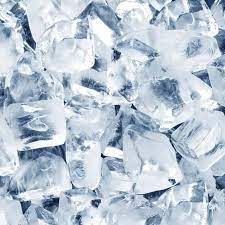

DIRECTIONS
Empty the ice cubes that are left in the trays (if there are any left) into the bin.
Take the trays over to the sink and fill them with cold water. (Hot water will freeze faster and more clear).
Place the water filled ice trays back in the freezer.
Replace the ice bin if you had to remove it.
Shut the door to the freezer.
Be sure to leave for around 4-6 hours at least to make sure it is frozen.
If you want to experiment, you can freeze things like fruit infused waters or juices.

INGREDIENTS
UNITS: US
2
cups water (approximately)
2
tablespoons water (additional if needed)